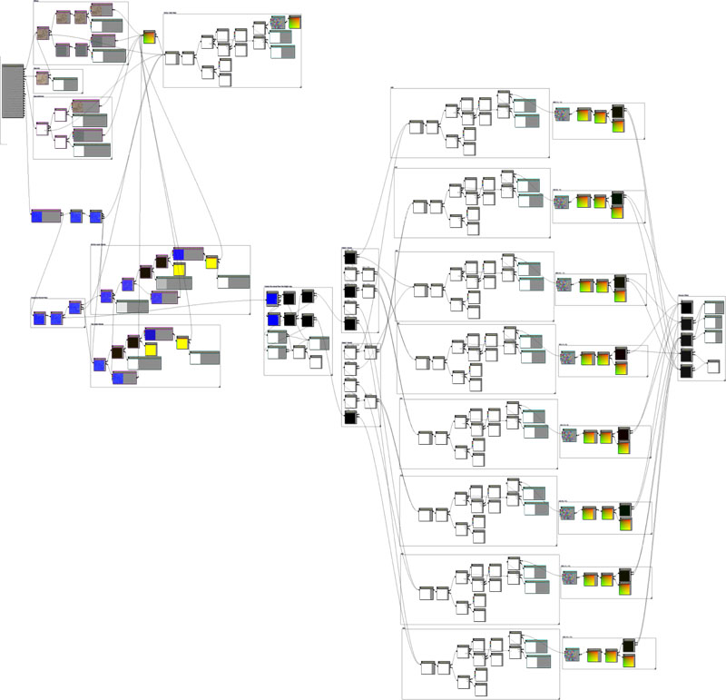

UDN
Search public documentation:
DevelopmentKitGemsDynamicNormalMapCH
English Translation
日本語訳
한국어
Interested in the Unreal Engine?
Visit the Unreal Technology site.
Looking for jobs and company info?
Check out the Epic games site.
Questions about support via UDN?
Contact the UDN Staff
日本語訳
한국어
Interested in the Unreal Engine?
Visit the Unreal Technology site.
Looking for jobs and company info?
Check out the Epic games site.
Questions about support via UDN?
Contact the UDN Staff
动态法线贴图
最后一次测试是在2011年4月份的UDK版本上进行的。
可以与 PC 兼容
概述
没有使用动态法线贴图
在这个屏幕截图中，顶点混合使得关卡设计人员可以很好地在两个不同的贴图间进行混合。但是，没有任何真正的深度信息，所以看上去像墙壁表面的油漆。
使用动态法线贴图
在这个屏幕截图中，顶点混合不仅允许关卡设计人员在两个不同的贴图间很好地混合，同时它相应地生成了法线贴图，从而使得红色的层具有强烈的深度感。
材质节点布局

相关主题
下载
- 下载本精华文章使用的内容。(DynamicNormalMap.zip)